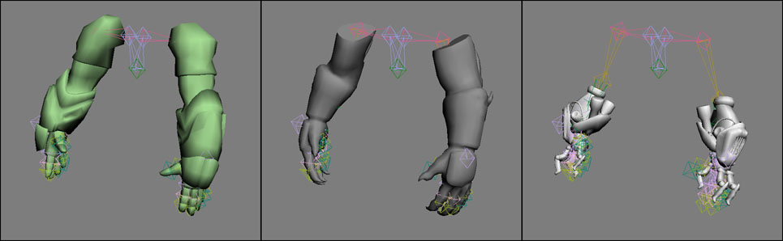
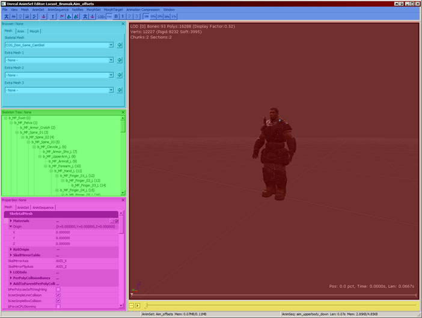
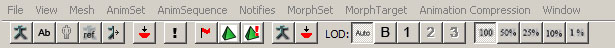

UDN
Search public documentation:
CreatingAnimationsJP
English Translation
中国翻译
한국어
Interested in the Unreal Engine?
Visit the Unreal Technology site.
Looking for jobs and company info?
Check out the Epic games site.
Questions about support via UDN?
Contact the UDN Staff
中国翻译
한국어
Interested in the Unreal Engine?
Visit the Unreal Technology site.
Looking for jobs and company info?
Check out the Epic games site.
Questions about support via UDN?
Contact the UDN Staff
Unreal Engine でのアニメーションの作成
ドキュメントの概要: Unreal エンジンにアニメーションを取り込むコンテンツパイプラインの説明。 ドキュメントの変更ログ: Scott Dossett および Jay Hosfelt により作成。Richard Nalezynski? により管理。概要
このドキュメントは、Unreal Engine のコンテンツ パイプラインのうち、アニメーションの作成に使用する各種アセットを特定するための出発点の役目を果たします。開発ツール
ActorX
すべての骨格キャラクターとアニメーションは、3D パッケージからエクスポートされ、ActorX を介して、Unreal Editor にインポートされなければいけません。 ActorXJP ページのダウンロード情報を参照してください。キャラクター
キャラクター セットアップとリギング
キャラクター モデルは比較的ニュートラルなポーズ (姿勢) に作成する必要がありますが (通常は T-Pose)、ジョイントは弛緩した自然な位置にあっても構いません。ボーン構造はボーンの単一階層で、人間の骨組みを模倣し、キャラクターメッシュの内部に収まるようなポーズをとり、原点に置かれるメインの "root" ボーンを親とします。 エディタでは、Y-Up 軸方向で作成された骨格メッシュのインポートも可能ですが、当社ではすべての 3D パッケージで Z-Up の使用を推奨しています。これによりボード間の整合性が保たれ、Max と Maya の間で座標軸に関する問題なくメッシュやアニメーションを転送することができます。 Z-Up を標準とした場合、Max では +Y 軸、Maya では-Y 軸を下向きにしてキャラクターのモデルやリグが作成されます (理由はわかりませんが、2 つのパッケージ間でこの座標軸の向きは逆になります)。エディタでは、+X 軸にキャラクターを向かせるために、回転オフセットを適用します。 骨組みには、衣服、アーマー (防具)、毛髪などのパーツとして重みづけされた追加のボーンも含まれ、武器ボーンや IK ボーンなど、アタッチメントポイントとしてのみ使用されるボーンも含まれています。
キャラクター アニメーション リグは、完全に骨格階層から別にしておくのが最善です。骨格階層にロケータやノードを追加すると、エクスポートの際に問題の原因となる場合があります。
複数のキャラクターが、同一の骨組みにモデル化され、これに収まるような割合に調整されると、これらのキャラクターは、アニメーション セットを共有することができ、必要なアニメーションの量が削減されます。微妙に異なる比率を持ったキャラクターでさえも、通常アニメーションを共有することができます。
テクニカルな面に関する注意:
骨組みには、衣服、アーマー (防具)、毛髪などのパーツとして重みづけされた追加のボーンも含まれ、武器ボーンや IK ボーンなど、アタッチメントポイントとしてのみ使用されるボーンも含まれています。
キャラクター アニメーション リグは、完全に骨格階層から別にしておくのが最善です。骨格階層にロケータやノードを追加すると、エクスポートの際に問題の原因となる場合があります。
複数のキャラクターが、同一の骨組みにモデル化され、これに収まるような割合に調整されると、これらのキャラクターは、アニメーション セットを共有することができ、必要なアニメーションの量が削減されます。微妙に異なる比率を持ったキャラクターでさえも、通常アニメーションを共有することができます。
テクニカルな面に関する注意: - 骨組み内でメッシュに影響を及ぼすボーンの最大数は 75 です。
- 骨組み内のボーン合計最大数は 256 です。
- メッシュの場合、1 つの頂点あたりの bone influences (ボーン影響) 変数の数は 4 です。
- メッシュに関しては、1 つの頂点にごとの最大ボーン影響度は 4 です。(インポート時、4 つ以上のボーンに影響される頂点は、もっとも低い影響が削除され、その頂点の残りの 4 つの影響で標準化されます。) 特定の LOD には、使用する最大に基づいてコストがあることに留意してください。従って、3 つの使用ですむ場合は、速くなります。LOD 1 やそれ以下には、通常 1 つを使用します。

ボーン階層
骨盤から別のルート ボーンを持つことは重要です。どこにあるかはあまり関係ありませんが、特定のことがらに関してはより複雑になります。ルートが足と原点にあると、アニメーションが一緒に動作するのを確認するのが簡単だということが分かりました。空中のどこかにあると、アニメーションが適切にチェーン/ブレンドせず、ポップを起こす場合に検知しにくいです。たとえば、Marcus が何かに上っているような RootMotion (ルート モーション) アニメーションをする際に、ルート ボーンをどこに置くべきかをビジュアライズするのが簡単になります。なぜなら、これは彼の足が地面につく部分であるべきだからです。 IK に関しては、足と手にルート ボーンの直接の子である IK Bones を使用します。これは、長いボーン階層を持つアニメーションをブレンドする際に、位置/回転エラーを解消します。 関連するアニメーションにより、階層の武器ボーンの場所は常に良い点と悪い点があります。たいていの場合、キャラクターは銃を持っているので、これらが手の子になるのは道理にかなっています。というのは、どれだけアニメーションを圧縮しても、またはどんなに低いフレームレートでアニメーション化しても、銃は手の中で確固とした位置を維持するからです。欠点は、武器が手から離れなければいけない場合です。スナイパー ライフルのような特定のリロードのアニメーション中、または銃をしまう場合は、ボーンの間で争いが起き、これが顕著にならないようにするためにより高いフレームレートを必要とする可能性があります。これらのタイプのアニメーションは、私たちのケースではまれだったので、手の子とすることがもっともメモリの節約になると決定しました。常に回転するようなたくさんの近接武器をアニメーション化していたとすれば、武器ボーンを階層のより高い部分に入れる (ルートの子に入れることさえも) ことを選択していたでしょう。 武器の先のボーンは、銃のピボット点を中心に変更する方法として設置されましたが、すべてのアニメーションの武器ボーン位置を変えず、その後際エクスポートせずにでも、すべてのアニメーションは正しく見えます。アニメーション化でいくつかの小さなリグの利点がありますが、まったくないほうがより良いと言えます。実装する時間があまりない中で、ミラーリング アニメーションの動作方法を終了した際に、行わなければいけない変更であったと言えます。これは、足のスライディングを減少させるには便利です。2 個以上のアニメーションを長いボーン階層でブレンドする際には、エラーが起きる場合があります。足の IK は足が正しい場所に維持されることを確保する方法でした。これは、方向的なブレンドでかなり顕著でした。Gears of War (PC) の Brumak ボス戦などのより大きな生物に関しては、これを維持しました。 armroll ボーン―上腕ボーンの直接の子―は、頂点が変形するのを手助けするために、上腕ボーンの半分の量をひねるためにあります。これは、階層の中でロール ボーンを腕に直接入れるより、ゲーム内でより良い動作をします。これにより、IK と 2 つのジョイントされた腕を持つことができます。
キャラクターのエクスポート
キャラクター メッシュが骨組みにバインドされ、適切に 3D パッケージ内で重みつけされた後で、ActorX を使用して PSK ファイルとしてエクスポートすることができます。エクスポートを望まない余分なボーンやウェイトされたメッシュがシーンにある場合は、シーンからこれを削除するか、接尾辞 _noexport を付けて個々のボーンの名前を変更する (Maya のみ) か、最上階層ボーンを接尾辞 _ignore を付けて名前を変更してください。キャラクターのインポートと設定
Unreal エディタを開き、アセットブラウザでキャラクターのインポート先となるパッケージを開きます。...を右クリックし... (以下執筆中)武器
一人称武器セットアップとリギング
一人称武器 (1st Person Weapons) とは、ゲームでプレーヤー各自が保持する武器のことです。プレーヤーの視界近くに配置され、通常はゲーム時間中ほどんと見える場所にあるため、このモデルはかなり大きなポリゴンで、その解像度テクスチャもより高いのが普通です。 ヒント: 一人称武器は片側から見られるのが一般的なので、ゲームを見る側から絶対に見えないポリゴンまたはオブジェクトを消去することで、モデルを最適化できます。最後のアニメーションが完了した後で、どの部分が絶対に見えないかを確認してからモデルを最適化します。 3D パッケージで、カメラを原点に配置し、+X 軸の方向に合わせます。これはプレーヤーのゲーム内の視野を表わします。このカメラの前に、一人称武器メッシュをゲーム中に見られるのと同じように配置します。適切に見えるようにカメラの FOV (field of view 視野角) とメッシュ位置を調整します。 テクニカルな面に関する注意: 一人称モデルは異なるレンダリングパスで表示されるため、ビューのオフセットと FOV を変更し、シーンビュー全体ではなく一人称オブジェクトだけに適用することができます。 一人称武器の設定時における最初の重要な決定事項は、プレーヤー自身が自分の腕を見ることができるかどうかにあります。これを視野に含めることにした場合、設定がかなり複雑になる可能性があります。その上、各武器にさまざまなタイプのアーム (男性、女性、ロボット、生き物などの腕) を提供するとなると、その複雑さはさらに増大します。 __1) 一人称武器のみ、一人称プレーヤーのアームはなし―これは複雑さが最低レベルのオプションで、武器のリギングとアニメーションのみ必要とします。武器はボーン階層にバインドします。このボーン構造は、原点にとどまる "root" ボーンを親とします。原点位置のカメラ視点から武器をアニメーション化します。アニメーションが完了した後で、ActorX のエクスポート機能を使用して、骨格メッシュは PSK ファイル、アニメーションは PSA ファイルとしてエクスポートします。
__2) 一人称武器と一人称アーム、ただしアームのバリアントはない―すべてのキャラクターのアームが同様で、一人称アームに 1 種類のモデルだけ必要な場合は、アームと武器を同じ骨組みに含めることができます。この単一の骨組み構造は、原点にとどまる "root" ボーンを親とします。原点位置のカメラ視点から武器とアームをアニメーション化します。アニメーションが完了した後で、武器とアームは一緒に単一の PSK ファイルとしてエクスポートし、アニメーションは PSA ファイルとしてエクスポートします。
__3) 一人称武器と、複数バリエーションの一人称アーム―各キャラクターが非常に異なり、各武器の扱いに必要な一人称アームメッシュが複数必要な場合は、武器用とアーム用に 2 つの骨組みが個別に必要です。各骨組みは、シーン原点に位置する独自の root ボーンを親とします。モデリングの観点から、アームメッシュの異形はすべて同じポーズ、同じ比率でモデル化し、同じ骨組みにバインドする必要があります。各アームメッシュを個別の PSK ファイルにエクスポートし、各武器は別に個別の PSK ファイルにエクスポートしてから、Unreal エディタにインポートします。これらの個別のアーム骨格メッシュは、1 つの AnimSet (アニメーションセット) を共有できます。
3D パッケージで武器とアームを一緒にアニメーション化した後でアニメーションをベークしてから、2 つの間の拘束関係を削除します。このファイルを ExportReady バージョンとして別名で保存し、両方の骨組みを含むバージョンを作成します。アームの骨組みを削除し、武器のアニメーションを PSA ファイルにエクスポートします。両方の骨組みを含む ExportReady ファイルを再度開きます。武器の骨組みを削除し、アームのアニメーションを別の PSA ファイルに、同じアニメーション名とフレーム範囲を指定してエクスポートします。各 PSA ファイルをそれぞれの AnimSet にインポートします。これにより、各武器ごとに Arm AnimSet (アームアニメーションセット) と Weapon AnimSet (武器アニメーションセット) が作成されます。
プログラマーとの共同作業により、ゲーム内でカメラの FOV を正しく設定し、一人称武器とアームが機能するようにして、正しいアームメッシュの異形をロードし、武器とアームのアニメーションを同期します。アニメーションはシーン原点を基点とするため、ビュー内でオフセットを設定する必要はありません。
__1) 一人称武器のみ、一人称プレーヤーのアームはなし―これは複雑さが最低レベルのオプションで、武器のリギングとアニメーションのみ必要とします。武器はボーン階層にバインドします。このボーン構造は、原点にとどまる "root" ボーンを親とします。原点位置のカメラ視点から武器をアニメーション化します。アニメーションが完了した後で、ActorX のエクスポート機能を使用して、骨格メッシュは PSK ファイル、アニメーションは PSA ファイルとしてエクスポートします。
__2) 一人称武器と一人称アーム、ただしアームのバリアントはない―すべてのキャラクターのアームが同様で、一人称アームに 1 種類のモデルだけ必要な場合は、アームと武器を同じ骨組みに含めることができます。この単一の骨組み構造は、原点にとどまる "root" ボーンを親とします。原点位置のカメラ視点から武器とアームをアニメーション化します。アニメーションが完了した後で、武器とアームは一緒に単一の PSK ファイルとしてエクスポートし、アニメーションは PSA ファイルとしてエクスポートします。
__3) 一人称武器と、複数バリエーションの一人称アーム―各キャラクターが非常に異なり、各武器の扱いに必要な一人称アームメッシュが複数必要な場合は、武器用とアーム用に 2 つの骨組みが個別に必要です。各骨組みは、シーン原点に位置する独自の root ボーンを親とします。モデリングの観点から、アームメッシュの異形はすべて同じポーズ、同じ比率でモデル化し、同じ骨組みにバインドする必要があります。各アームメッシュを個別の PSK ファイルにエクスポートし、各武器は別に個別の PSK ファイルにエクスポートしてから、Unreal エディタにインポートします。これらの個別のアーム骨格メッシュは、1 つの AnimSet (アニメーションセット) を共有できます。
3D パッケージで武器とアームを一緒にアニメーション化した後でアニメーションをベークしてから、2 つの間の拘束関係を削除します。このファイルを ExportReady バージョンとして別名で保存し、両方の骨組みを含むバージョンを作成します。アームの骨組みを削除し、武器のアニメーションを PSA ファイルにエクスポートします。両方の骨組みを含む ExportReady ファイルを再度開きます。武器の骨組みを削除し、アームのアニメーションを別の PSA ファイルに、同じアニメーション名とフレーム範囲を指定してエクスポートします。各 PSA ファイルをそれぞれの AnimSet にインポートします。これにより、各武器ごとに Arm AnimSet (アームアニメーションセット) と Weapon AnimSet (武器アニメーションセット) が作成されます。
プログラマーとの共同作業により、ゲーム内でカメラの FOV を正しく設定し、一人称武器とアームが機能するようにして、正しいアームメッシュの異形をロードし、武器とアームのアニメーションを同期します。アニメーションはシーン原点を基点とするため、ビュー内でオフセットを設定する必要はありません。

エンジンでの微調整
正しいカメラ FOV で一人称武器と腕を動作させ、武器と腕のアニメーションを同期させるには、正しい腕メッシュの変化形を読み込み、プログラマとともに作業するのが最善です。アニメーションはシーンの原点に基づいているので、ビューに入れるにはオフセットは必要ないはずです。微調整が必要な場合は、オフセットはメッシュに適用するか、プログラマがオフセットをハードコードすることができます。三人称武器セットアップとリギング
三人称武器とは、主人公であるプレーヤーから見える、他のキャラクターが手にしている武器のことです。三人称武器モデルを設定するには、まずそれを専用の小さなボーン階層にバインドし、骨格メッシュとしてエクスポートする必要があります。この root ボーンがキャラクターの weapon ボーンによって拘束されたときに、武器がキャラクターの手の中の適切な位置におさまるように、武器の root ボーンを武器メッシュと相対的に配置する必要があります。 リロードのアニメーションのように武器とキャラクターをともにアニメーション化するには、リグされたキャラクターと武器を同じシーンに持ってきて、武器の「root」ボーンをキャラクターの「weapon」ボーンに拘束します。最終的には武器とキャラクターを 2 つ別々の、しかしながら同期させた状態のアニメーションとしてエクスポートします。
手を武器のパーツ、またはその反対に拘束して、お好きなようにキャラクターと武器をアニメーション化してください。このキャラクター プラス武器のアニメーションの準備が整ったら、骨格階層にアニメーションをベイクし、すべての拘束を削除してください。すべてのアニメーション キーは武器の「root」ボーンからのみ削除し、その位置と回転値を <0,0,0> に設定してください。これは、すべてのアニメーション化された武器のアニメーションを維持しますが、武器をシーンの原点に置いたままにします。ファイルを保存しますが、”ExportReady” バージョンと名前を変更してください。
リロードのアニメーションのように武器とキャラクターをともにアニメーション化するには、リグされたキャラクターと武器を同じシーンに持ってきて、武器の「root」ボーンをキャラクターの「weapon」ボーンに拘束します。最終的には武器とキャラクターを 2 つ別々の、しかしながら同期させた状態のアニメーションとしてエクスポートします。
手を武器のパーツ、またはその反対に拘束して、お好きなようにキャラクターと武器をアニメーション化してください。このキャラクター プラス武器のアニメーションの準備が整ったら、骨格階層にアニメーションをベイクし、すべての拘束を削除してください。すべてのアニメーション キーは武器の「root」ボーンからのみ削除し、その位置と回転値を <0,0,0> に設定してください。これは、すべてのアニメーション化された武器のアニメーションを維持しますが、武器をシーンの原点に置いたままにします。ファイルを保存しますが、”ExportReady” バージョンと名前を変更してください。
武器のエクスポート
武器とキャラクターのベイクされたアニメーションを含む "Export Ready" ファイルを開きます。シーンからキャラクターの骨組みとメッシュを削除します。ActorX を使用して、武器とアニメーションを PSA ファイルとしてエクスポートします。両方の骨組みを含む ExportReady ファイルを再度開き、ここで武器の骨組みとメッシュを削除します。同じアニメーション名とフレーム範囲を指定し、キャラクター アニメーションを別の PSA ファイルにエクスポートします。武器のインポート
Unreal エディタで、キャラクターの PSA ファイルはキャラクターの AnimSet にインポートし、武器の PSA は武器の AnimSet にインポートします。エンジンでの微調整
プログラマーとの共同作業により、ゲームプレイ中に武器骨格メッシュがキャラクターの weapon ボーンに拘束されるようにします。場合によっては、キャラクターの weapon ボーン上にソケットを作成する必要があります。次にキャラクターと武器の両方でアニメーションを再生すると、同期再生されます。Morph Targets (モーフ ターゲット)
Morph Target Setup(モーフ ターゲット) セットアップ
Morph Target (モーフ ターゲット) (Blend Shape としても知られています) は、頂点のグループをオフセットすることにより、メッシュの形、またはメッシュの一部を変更するのに使用されます。この頂点の変形は、ボーンの変形が十分でない場合の良い選択肢となります。Morph Target は、顔のアニメーション、筋肉のシミュレーション、ビークルのダメージなど、いろいろな適用ができます。Morph Target (モーフ ターゲット) エクスポート
エディタでの使用のため、Morph Target は個々の PSK ファイルとしてエクスポートされ (骨格メッシュをエクスポートするのに使用されるのと同じファイルです)、Unreal Editor の以前インポートされた骨格メッシュの上にインポートされます。特定のメッシュに 20 個のモーフがある場合は、20 個の PSK ファイルをエクスポートする必要があります。 3D パッケージで、すべてのモーフを同じメッシュにターゲットしてください。このターゲット メッシュが選択された状態で、最初のモーフをオンにして、ターゲット メッシュを .PSK ファイルとして、ActorX エクスポータを使用してエクスポートします。最初のモーフをオフにして、次のモーフをオンにします。その同じターゲット メッシュを別の .PSK としてエクスポートします。各モーフが個々の .PSK ファイルにエクスポートされるまで、これを繰り返します。 モーフの注意: 頂点順序が同じなままであるために、すべてのモーフは、同じメッシュからエクスポートされ、同じメッシュへインポートされなければいけません。異なる頂点順序でメッシュにモーフをインポートすることは、問題を起こす原因となります。各モーフをエクスポートする際は、メッシュを移動させない、または骨格バインド ポーズを変更しないようにしてください。ソース骨格メッシュを再びインポートすることも、頂点順序の問題の原因となり、Morph Target の再インポートが必要になる場合があります。Morph Target (モーフ ターゲット) インポートとエディタでのセットアップ
Morph Target をインポートし、Unreal Editor でセットアップするには、MorphTargetSet Asset を作成する必要があります。その後、PSK をMorphTargetSet にインポートして、モーフのリストを作成します。そして、モーフ リストを Animtree の骨格メッシュにアタッチします。この時点で、プログラマはモーフにアクセスして適用するか、Matinee で適用し、変更することができます。 MorphSet アセットを作成するには、モーフを適用したい骨格メッシュをダブルクリックします。これで Animset Editor が開きます。Animset Editor で、メニュー項目 File (ファイル) -> NewMorphTargetSet を選択します。作成したい新しいMorphTargetSet アセットのPackage (パッケージ)、Group (グループ)、Name (名前) を入力します。 Animset Editor の Browser (ブラウザ) セクションの一番上にある “Morph” タブをクリックします。新しいMorphTargetSet が選択されているはずです。そうでない場合は、ドロップダウン メニューをクリックして、新しいMorphTargetSet を探してください。 PSK ファイルをモーフ リストにインポートするには、メニュー項目 File (ファイル) -> Import MorphTarget (MorphTarget をインポート) を選択します。PSK のリストを選択し (複数の PSK ファイルは [Shift] 選択できます)、”OK” をクリックしてください。各モーフは、ダイアログ ボックスを表示するので、モーフの名前のダブルチェック、または変更をすることができます。高ポリゴン メッシュのモーフは、インポートするのに時間がかかることがあります。インポート後に、MorphTargets リストで各モーフをクリックします。これで、3D ウィンドウのソース メッシュ上で選択されたモーフをプレビューすることができるので、正しくインポートされたかを確認することができます。 技術的注意: 新しいモーフをインポートする際に、エディタは頂点順序に、インポートされた PSK とソース骨格メッシュの間の頂点を比較し、位置の変わった頂点を探し出し、移動した頂点のデータのみを保存します。 Morph Target を骨格メッシュに接続するには、メッシュの Animtree を開きます。これで Animset Editor ウィンドウが開きます。Animtree Editor で、Animtree ノードを選択します。 まずは Animtree を作成した MorphTartetSet に接続します。Properties (プロパティ) セクションで、"PreviewMorphSets" リストを展開し、緑色のプラス アイコンを選択して入力を作成します。
まずは Animtree を作成した MorphTartetSet に接続します。Properties (プロパティ) セクションで、"PreviewMorphSets" リストを展開し、緑色のプラス アイコンを選択して入力を作成します。
 Animset Editor ウィンドウが開いた状態で、Generic ブラウザに戻り、MorphTargetSet を選択します。そして、この Animtree Editor ウィンドウに戻り、緑色の矢印をクリックして、MorphTargetSet を Animset プロパティに追加します。
Animset Editor ウィンドウが開いた状態で、Generic ブラウザに戻り、MorphTargetSet を選択します。そして、この Animtree Editor ウィンドウに戻り、緑色の矢印をクリックして、MorphTargetSet を Animset プロパティに追加します。
 今度は、個々のモーフを Animtree に接続します。Animtree Editor ウィンドウの何もないエリアをクリックして、ノードのリストを表示させます。"MorphNodeWeight" を選択してそのノードを作成します。再度、何もないエリアを右クリックして、"MorphPose" を選択してそのノードを作成します。以下のようにモーフ ノードと animtree をリンクさせてください。
今度は、個々のモーフを Animtree に接続します。Animtree Editor ウィンドウの何もないエリアをクリックして、ノードのリストを表示させます。"MorphNodeWeight" を選択してそのノードを作成します。再度、何もないエリアを右クリックして、"MorphPose" を選択してそのノードを作成します。以下のようにモーフ ノードと animtree をリンクさせてください。
 プロパティ セクションで MorphPose ノードを選択して、MorphTargetSet に既存のモーフの名前を入力します。これで、値のバーを MorphNodeWeight ノードの下にドラッグして、3D ウィンドウで Morph がブレンドイン/アウトするのが見えるはずです。MorphNodeWeight ノードの名前を変更します。MorphNodeWeight ノードの名前は、Matinee を通して、またはモーフをゲーム内に適用するためにプログラマによって使用されます。
このツリーを素早く複製して、より多くのモーフを Animtree に追加するには、MorphNodeWeight ノードと MorphPose ノードの両方を選択して、[Ctrl] + [W] を押してノードとリンクを複製してください。新しいMorphPose ノードのモーフ名を変更し、MorphNodeWeight ノードの名前を変更してください。
プロパティ セクションで MorphPose ノードを選択して、MorphTargetSet に既存のモーフの名前を入力します。これで、値のバーを MorphNodeWeight ノードの下にドラッグして、3D ウィンドウで Morph がブレンドイン/アウトするのが見えるはずです。MorphNodeWeight ノードの名前を変更します。MorphNodeWeight ノードの名前は、Matinee を通して、またはモーフをゲーム内に適用するためにプログラマによって使用されます。
このツリーを素早く複製して、より多くのモーフを Animtree に追加するには、MorphNodeWeight ノードと MorphPose ノードの両方を選択して、[Ctrl] + [W] を押してノードとリンクを複製してください。新しいMorphPose ノードのモーフ名を変更し、MorphNodeWeight ノードの名前を変更してください。
フェイス
ビークル
ビークルのセットアップとリギングに関する情報は、 ビークルのセットアップ ページを参照してください。カメラ
カメラのセットアップとリギングに関する情報は、 カメラのセットアップ ページを参照してください。Creatures
エディタ ツール
PSK と PSA を理解する
骨格メッシュやアニメーションをエディタにインポートする際には、PSK と PSA という 2 つのファイル タイプで作業することになります。 PSK ファイルは、メッシュ自身、マテリアル番号、エッジ スムージング、ボーン階層、バインド ポーズでのボーンの位置や方向、頂点ウェイトの情報を含む骨格メッシュに関するすべての情報を含んでいます。これはアニメーション情報を含みません。エディタにインポートされると、これは、ボーンの階層にウェイトされたメッシュを作成します。メッシュは、3D パッケージのタイムラインの最初にあったポーズでエクスポートされ、エディタではこれが Bind Pose となります。 PSA ファイルは、アニメーションのリストを含んでいます。これらのアニメーションは、時間とともにボーンの位置や方向のデータを含みます。このデータは、その親ボーンに関連しているので、階層が変わると、アニメーションは再エクスポートされなければいけない場合があります。エディタにインポートされると、これは、ボーン トラックのリストや、これらのトラックの位置や回転データを含むアニメーションのリストを Animset に追加します。 PSA に関する注意: このボーン トラックのリストは、それがリンクしている骨格メッシュのボーンからは完全に独立しており、animset のトラック リストにマッチする骨格メッシュ ボーンにアニメーションを適用するだけであることに注意してください。余分なボーンを含むアニメーションをインポートすることで、ボーンはトラック リストに追加できます。アニメーション ブラウザの “Delete tracks (トラックを削除)” メニュー項目を選択することで、ボーンをトラック リストから削除することができます。animset からトラックを削除しても、骨格メッシュにボーンを追加したり、骨格メッシュからボーンを削除したりすることはありません。animset を異なる骨格メッシュにリンクしても、animset のボーンのトラック リストは変更されません。コンテンツのインポートとエディタでのセットアップ
PSK ファイルを Unreal Editor にインポートするには、まず Asset Browser を開き、キャラクターをインポートしたいパッケージを読み込みます。 リストのパッケージで右クリックをして、”Import… (インポート)” を選択します。 PSK ファイルを選択して、”Open (開く)” をクリックします。 インポート ダイアログ ボックスが開くので、パッケージ名が正しいかどうか確認してください。フィールドに、新しい未使用の名前をタイプすることで、インポート時に新しいパッケージを作成します。新しいサブ グループを追加したい場合、または既存のサブ グループにインポートしたい場合は、“Group (グループ)” フィールドに名前を追加することもできます。“Name (名前)” フィールドで、名前が正しいことを確認してください。デフォルトで、PSK ファイルの名前を使用するようになっています。 上書きするには、既存の骨格メッシュの名前をタイプしてください。 Maya で Y-Up を使用している場合、"bAssumeMayaCoordinates" ボックスをチェックすることで、オフセットを適用し、エディタでメッシュが正しく見えるように方向を正します。 “OK” をクリックすると、パッケージで新しい骨格メッシュを作成します。高ポリゴン メッシュは、インポートするのに時間がかかる場合があります。 このメッシュをビューして編集するには、ダブルクリックしてください。これで Animset Editor ウィンドウが開きます。このウィンドウは、animset、骨格メッシュ、Morph Target を変更するのに使用します。Animation Set Editor
Animset Editor Window は、animset、骨格メッシュ、Morph Target を表示して、変更するのに使用します。
Preview Buttons (プレビュー ボタン): 3D ビューで表示されているものを操作します。Browser (ブラウザ): メッシュ、アニメーション、モーフをリストしたり、選択したりします。
Skeleton Tree (骨格ツリー): 3D ビューで階層をビューしたり、ボーンを非表示にしたりします。
Properties (プロパティ): メッシュ、アニメーション、モーフの設定を変更します。
3D View (3D ビュー): メッシュ、アニメーション、モーフをビューします。
Time Slider (タイム スライダー): アニメーションの再生や一時停止、animnotifies のビューをします。 3D ビューで、左のマウス ボタンを使用することで、メッシュの周りデビューを回転させることができます。右のマウス ボタンは、ビューをズームインしたり、ズームアウトします。真ん中のマウス ボタンは、上下左右にビューをパニングします。 [L] キーを押しながら 3D ウィンドウでドラッグすると、ライトを移動させることができます。 一般的なボタン:

- Show Skeleton (骨格を表示)
- これは、3D ウィンドウでメッシュの上にオーバーレイされたボーン構造を表示します。これがオンの状態で、Skeleton Tree (骨格ツリー) セクションで、特定のボーンを右クリックして、これらを表示したり、非表示にしたりすることができます。
- Show Bone Names (ボーン名を表示)
- これは、3D ウィンドウで各ボーンの名前を表示します。
- Show Wireframe (ワイヤフレームを表示)
- これは、ワイヤフレーム ビューとシェードされたビューを切り替えます。
- Show Reference Pose (参照ポーズを表示)
- これは、骨格メッシュを強制的にバインド ポーズ (インポートされたポーズ) にします。
- Show Mirror (ミラーを表示)
- これは、XZ プレーンに沿って、アニメーションをミラーします。これはプレビュー専用です。アニメーションを実際に変更することはありません。
- Socket Manager (ソケット マネージャ)
- これは、Socket Manager (ソケット マネージャ) ウィンドウを開き、ボーンに Socket (ソケット) を追加することができます。Socket (ソケット) は、武器やパーティクルなどのアイテムを追加するのに使用されます。Socket (ソケット) は、必要に応じて、ボーンからオフセットすることができます。
- New Notify (新しい Notify)
- これは、AnimNotify を選択されたアニメーションのタイムラインに追加します。Animnotifies はサウンド、パーティクル、アタッチメントの切り替え、またはプログラマが設定できるようなあらゆるイベントをトリガするタイムラインのポイントです。
- Toggle Cloth (クロスのトグル)
- これは、頂点クロス シミュレーションをビューすることができます。
- Generate Soft-Body Tetrahedron Mesh (ソフトボディ四面体メッシュの生成)
- (?)
- Toggle Soft-Body Preview Simulation (ソフトボディ プレビュー シミュレーションのトグル)
- (?)
- Show Uncompressed Animation (非圧縮のアニメーションを表示)
- アニメーション圧縮が適用され、Show Skeleton (骨格を表示) がオンされると、これは、他の骨格をオーバーレイし、選択されたアニメーションの非圧縮バージョンを再生します。従って、2 つの骨格の違いをビジュアル的に比べることができます。
- Animation Compression... (アニメーション圧縮)
- これは、Animation Compression (アニメーション圧縮) ウィンドウを開きます。
- LOD
- このボタンのセットは、3D ウィンドウでビューされる LOD を変更します。AUTO (自動) は、ゲームで表示されるように LOD を表示し、LOD メッシュを、メッシュからのビューアーの距離により変更します。現在の LOD レベル数は、3D ウィンドウの左上の隅に表示されています。B、1、2、3 ボタンは、3D ウィンドウに強制的にその LOD レベルを表示させます。“B” はベース、LOD-0 のことを示します。
- Playback Speed (再生スピード)
- このボタンのセットは、3D ウィンドウでのアニメーションの再生スピードを変更します。しかしながら、プレビュー レートを変えるだけであり、ゲーム内での再生レートには影響を与えません。ゲーム内のアニメーションのスピードに影響を与える "RateScale" 設定は、Properties (プロパティ) セクションの AnimSequence タブで変更することができます。
アニメーションツリー エディタ
詳細については、AnimTree エディタユーザーガイド を参照してください。PhAT
詳細な情報に関しては、物理資産ツール を参照してください。モーションキャプチャ
このセクションでは、Epic の独特のモーション キャプチャ装置やパイプラインを紹介します。しかし、市場には多くのタイプのモーション キャプチャ システムがあることを覚えておいてください。それぞれのタイプには、その利点と欠点があります。ご自身に一番合うシステムを使用するようにしてください。どのようなモーション キャプチャ システムやパイプラインを使用するにしても、最終的なアニメーションを Unreal Editor にインポートするには、Max、Maya、Softimage のような 3D パッケージから、ActorX エクスポータを使用してエクスポートしなければいけません。 Epic では、Vicon MX システム (http://www.vicon.com/) を使用しています。これは、俳優に付けられたベルクロによって反射するマーカーを追跡する「受動光」システムです。Epic のシステムでは、36 台のカメラが部屋中に均一に置かれています。同時に、同期した参考用ビデオも記録します。 Epic のモーション キャプチャ パイプラインは以下の通りです。- システムを調整します。
- 動きをキャプチャします。
- Vicon IQ または Blade を使用してマーカー データをクリーンアップします。
- Motionbuilder でキャラクターにターゲットします。
- Max または Maya でアニメーションを洗練します。
- ActorX を使用して Unreal Editor にインポートします。
 武器や小道具にもマーカーをつけます。トラックしなければいけない武器やオブジェクトのそれぞれに 4 個から 5 個のマーカーをつけます。実際は 3 個で十分ですが、オクルージョンのことを考えると 1 個か 2 個余分につけると便利です。また、データをクリーンアップしたり、ラベルしたりする際に、オブジェクトの前面を断定するのが簡単になります。
武器や小道具にもマーカーをつけます。トラックしなければいけない武器やオブジェクトのそれぞれに 4 個から 5 個のマーカーをつけます。実際は 3 個で十分ですが、オクルージョンのことを考えると 1 個か 2 個余分につけると便利です。また、データをクリーンアップしたり、ラベルしたりする際に、オブジェクトの前面を断定するのが簡単になります。
 Vicon IQ でマーカー データをクリーンアップし、ラベルした後、ラベルのついたマーカー データと完全にリグしたキャラクターを Motionbuilder シーンにインポートします。その後、モーションをキャラクターにターゲットします。Motionbuilder の “Character (キャラクター)” や “Actor (俳優)” オプションを調節して、希望する動きやポーズを作成したら、アニメーションをキャラクター骨格、または Motionbuilder キャラクター リグに描画します (アニメーションを「ベイクする」として知られています)。この時点でさらに、アニメーションをクリーンアップしたり、タイミングを調整したり、ループをセットアップしたりと、すべて Motionbuilder で行うことができます。
その後、そのアニメーションを Motionbuilder から Max Biped または Maya にインポートして、アニメーションに最終的な磨きをかけます。
アニメーションが完全に思うように仕上がったら、ActorX を使用して、そのアニメーションを Max または Maya から Unreal Editor にエクスポートします。
ヒント: 部屋の一隅にはビデオカメラが設置されています。Epic のシステムは、そのビデオカメラからビデオをキャプチャし、データと同期するようにセットアップされています。ビデオカメラがすべてのキャプチャ空間をカバーできるのに十分なワイドレンズであることを確認してください。
Vicon IQ でマーカー データをクリーンアップし、ラベルした後、ラベルのついたマーカー データと完全にリグしたキャラクターを Motionbuilder シーンにインポートします。その後、モーションをキャラクターにターゲットします。Motionbuilder の “Character (キャラクター)” や “Actor (俳優)” オプションを調節して、希望する動きやポーズを作成したら、アニメーションをキャラクター骨格、または Motionbuilder キャラクター リグに描画します (アニメーションを「ベイクする」として知られています)。この時点でさらに、アニメーションをクリーンアップしたり、タイミングを調整したり、ループをセットアップしたりと、すべて Motionbuilder で行うことができます。
その後、そのアニメーションを Motionbuilder から Max Biped または Maya にインポートして、アニメーションに最終的な磨きをかけます。
アニメーションが完全に思うように仕上がったら、ActorX を使用して、そのアニメーションを Max または Maya から Unreal Editor にエクスポートします。
ヒント: 部屋の一隅にはビデオカメラが設置されています。Epic のシステムは、そのビデオカメラからビデオをキャプチャし、データと同期するようにセットアップされています。ビデオカメラがすべてのキャプチャ空間をカバーできるのに十分なワイドレンズであることを確認してください。
 ヒント: すべてのキャラクターが常にキャプチャ ボリューム内に留まっていて、各パフォーマンスを T-Pose で始め、T-Pose で終わると、データをクリーンアップするのが簡単になります。俳優がキャプチャ空間を出ても構わない場合は、ダッシュする時のみです。俳優がキャプチャ空間から出ると、出たままの状態で、シーンの最後に T-Pose に戻ってもいけません。
ヒント: 色のついたベルクロ ストラップを各俳優に取り付け、参考用ビデオで簡単に俳優を識別できるようにします。
ヒント: すべてのキャラクターが常にキャプチャ ボリューム内に留まっていて、各パフォーマンスを T-Pose で始め、T-Pose で終わると、データをクリーンアップするのが簡単になります。俳優がキャプチャ空間を出ても構わない場合は、ダッシュする時のみです。俳優がキャプチャ空間から出ると、出たままの状態で、シーンの最後に T-Pose に戻ってもいけません。
ヒント: 色のついたベルクロ ストラップを各俳優に取り付け、参考用ビデオで簡単に俳優を識別できるようにします。